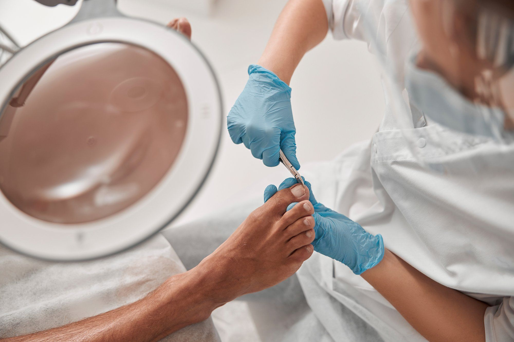
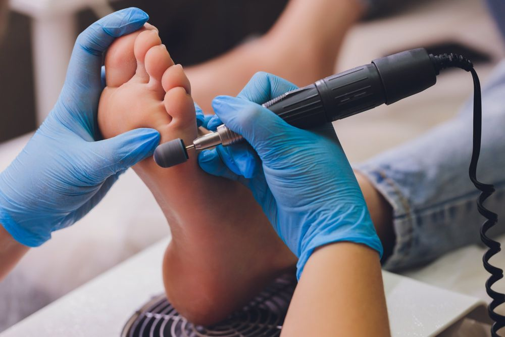
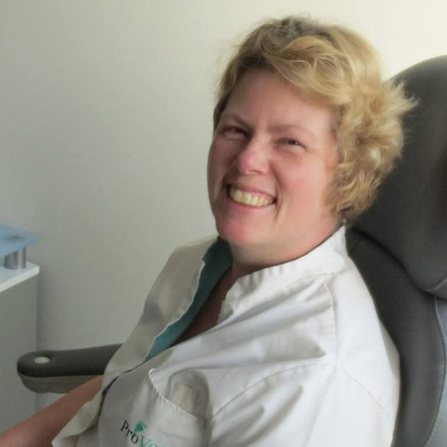

Volledige pedicurebehandeling
De uitgebreide behandeling: alle tijd voor uw voeten, maximaal 45 minuten.
€ 39Afspraak maken

Al sinds 2014 zorg ik dat u op gezonde voet blijft lopen. In een moderne praktijk op het oude Philipsterrein, rustig en persoonlijk.
Kies de behandeling die bij u past. Tijdens de behandeling bespreken we rustig wat uw voeten nodig hebben.
De uitgebreide behandeling: alle tijd voor uw voeten, maximaal 45 minuten.
Een volledige pedicurebehandeling van maximaal 30 minuten.
Voor het oplossen van een eenvoudig probleem, zoals een likdoorn of een ingroeiende nagel.
Alleen op afspraak, dinsdag t/m vrijdag van 8.30 tot 16.00 uur.

Je voeten dragen je lichaam. Daarom is het heel belangrijk dat ze in goede conditie blijven.
Ik ben medisch voetzorgverlener met een rijkserkend diploma (MBO 4) en heb 23,5 jaar in de thuiszorg gewerkt. Die medische kennis neem ik mee in elke behandeling.
De praktijk is modern ingericht, met de meest uitgebreide apparatuur en hulpmiddelen. Ik werk volgens de hygiënecode van Provoet.

Na 23,5 jaar met veel plezier in de thuiszorg te hebben gewerkt, was ik toe aan een nieuwe uitdaging. Ik volgde de opleiding tot medisch pedicure en begon in 2014 mijn eigen praktijk: eerst ambulant, daarna in een gezondheidscentrum in Bavel en nu in Oosterhout.
Ik voel me erg gewaardeerd door mijn klanten, en het contact met mensen geeft me elke dag nieuwe energie. Ik wil ervoor zorgen dat u zo lang mogelijk op gezonde voet kunt blijven lopen.
Bel, app of mail gerust, dan zoeken we samen een moment dat u goed uitkomt.
Alleen op afspraak.